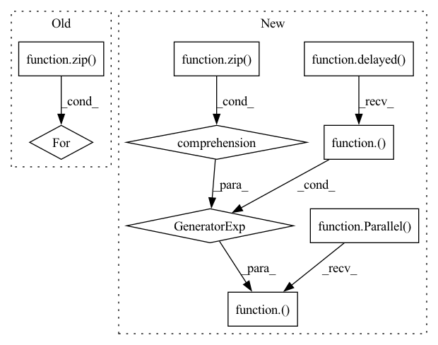

Pattern ID :12706

Before Change
knn_insert_ids = np.arange(num_memories)
keys = np.ascontiguousarray(memories[..., 0, :])
for key, index in zip(keys, self.scoped_indices):
db_offset = self.db_offsets[index]
knn = self.knns[index]
knn.add(key, ids = knn_insert_ids + db_offset)
After Change
def process(knn, key, db_offset):
knn.add(key, ids = knn_insert_ids + db_offset)
Parallel(n_jobs = self.n_jobs)(delayed(process)(*args) for args in zip(knns, keys, db_offsets))
// add the new memories to the memmap "database"
add_indices = (rearrange(np.arange(num_memories), "j -> 1 j") + rearrange(self.db_offsets[list(self.scoped_indices)], "i -> i 1")) % self.max_memories
In pattern: SUPERPATTERN
Frequency: 3
Non-data size: 9
Instances
Fragment ID: 43018155
Project Name: lucidrains/memorizing-transformers-pytorch
Commit Name: a5a7400a475ce70d125bff661ef7920c959e28da
Time: 2022-04-10
Author: lucidrains@gmail.com
File Name: memorizing_transformers_pytorch/knn_memory.py
M Class Name: KNNMemory
N Class Name: KNNMemory
M Method Name: add(2)
N Method Name: add(2)
M Parent Class:
N Parent Class:
M File Name: memorizing_transformers_pytorch/knn_memory.py
N File Name: memorizing_transformers_pytorch/knn_memory.py
M Start Line: 180
M End Line: 188
N Start Line: 188
N End Line: 197
'>
Before Change
processes = []
pool = multiprocessing.Pool(processes=num_cores)
for clean, enhanced, length in zip(target_wavs, pred_wavs, lens):
processes.append(
pool.apply_async(evaluation, args=(clean, enhanced, int(length)))
)
After Change
def multiprocess_evaluation(pred_wavs, target_wavs, lengths):
pesq_scores = Parallel(n_jobs=30)(
delayed(pesq)(
fs=params.Sample_rate,
ref=clean[: int(length)],
deg=enhanced[: int(length)],
mode="wb",
)
for enhanced, clean, length in zip(pred_wavs, target_wavs, lengths)
)
return pesq_scores
class SEBrain(sb.core.Brain):
'>
Fragment ID: 43018156
Project Name: speechbrain/speechbrain
Commit Name: 50b529065d073e548241c714fe621d76a6ab9117
Time: 2020-08-06
Author: plantinga.peter@protonmail.com
File Name: recipes/Voicebank/enhance_spectral_mask/experiment.py
M Class Name: AnonimousClass
N Class Name: AnonimousClass
M Method Name: multiprocess_evaluation(3)
N Method Name: multiprocess_evaluation(4)
M Parent Class:
N Parent Class:
M File Name: recipes/Voicebank/enhance_spectral_mask/experiment.py
N File Name: recipes/Voicebank/enhance_spectral_mask/experiment.py
M Start Line: 47
M End Line: 64
N Start Line: 41
N End Line: 49
'>
Before Change
processes = []
pool = multiprocessing.Pool(processes=num_cores)
for clean, enhanced, length in zip(target_wavs, pred_wavs, lens):
processes.append(
pool.apply_async(evaluation, args=(clean, enhanced, int(length)))
)
After Change
def multiprocess_evaluation(pred_wavs, target_wavs, lengths):
pesq_scores = Parallel(n_jobs=30)(
delayed(pesq)(
fs=params.Sample_rate,
ref=clean[: int(length)],
deg=enhanced[: int(length)],
mode="wb",
)
for enhanced, clean, length in zip(pred_wavs, target_wavs, lengths)
)
return pesq_scores
'>
Fragment ID: 43018157
Project Name: speechbrain/speechbrain
Commit Name: 50b529065d073e548241c714fe621d76a6ab9117
Time: 2020-08-06
Author: plantinga.peter@protonmail.com
File Name: recipes/Voicebank/enhance_waveform_map/experiment.py
M Class Name: AnonimousClass
N Class Name: AnonimousClass
M Method Name: multiprocess_evaluation(3)
N Method Name: multiprocess_evaluation(4)
M Parent Class:
N Parent Class:
M File Name: recipes/Voicebank/enhance_waveform_map/experiment.py
N File Name: recipes/Voicebank/enhance_waveform_map/experiment.py
M Start Line: 53
M End Line: 70
N Start Line: 47
N End Line: 55